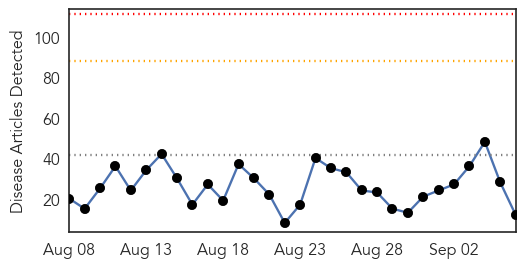
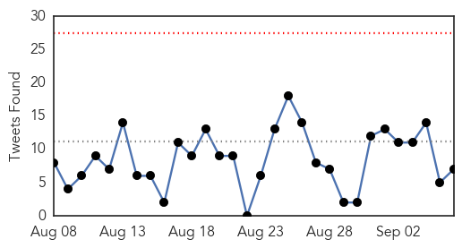
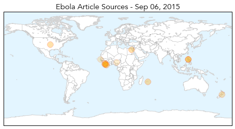
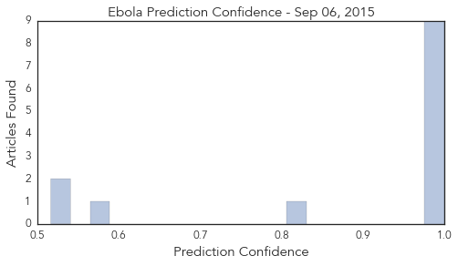

Ebola
30-Day Web Trend
0 alerts, 0 warnings

30-Day Twitter Trend
0 alerts, 0 warnings

Article Locations
Article Confidences
Top Articles:
- 1.000
- Village in Sierra Leone quarantined after Ebola death
- 0.999
- Philippine monkeys infected with Ebola not lethal to humans
- 0.999
- Liberia declared Ebola-free for second time
- 0.999
- Aid groups take emergency steps against Ebola onslaught
- 0.999
- Liberia Is freed from Ebola Again, Remains on 'Heightened Surveillance'
- 0.999
- Philippine monkeys infected with Ebola not lethal to humans
- 0.998
- WHO declares end of Ebola outbreak in Liberia
- 0.996
- Ebola Outbreak – Isolation Ward in Souillac Hospital (Mauritius) Set Up
- 0.984
- Some West Africans Believe The Government Is Lying: They Say Ebola Scare Is A Scam
- 0.830
- Sierra Leone not being allowed to compete at Samoa 2015 "not what anyone wanted", CGF chief executive claims
- 0.586
- More heartbreak for Ebola survivor after baby boy dies
- 0.535
- Nigerian appointed first African member World Association for Medical Law
- 0.517
- One Doctor's Campaign To Pay Those Who Risked Their Lives
Top Tweets:
- 0.857
- Ebola virus and anti-viral therapies - Weekly Observer http://t.co/ZaFu9iNiCt ebola EVD
- 0.836
- Back with a bang of Ebola Sierra Leone to vaccinate 200 people who came in ... - Benchmark Reporter http://t.co/iOYKjmU0UK ebola EVD
- 0.741
- Philippine monkeys infected with Ebola not lethal to humans - News24 http://t.co/HQRTlmB6tc ebola EVD
- 0.687
- Baobab Forum: Ebola a threat to Africa and the world - eTurboNews http://t.co/pGKjhETqPl ebola EVD
- 0.667
- In Campaign To Prevent Ebola A Vaccine For Apes Could Save Humans Too - NPR http://t.co/gxKLeAqBK3 ebola EVD
- 0.657
- Liberia Is Free of Ebola Again Remains on 'Heightened Surveillance' - Dispatch Times http://t.co/I0ANTe2RW5 ebola EVD
- 0.657
- 200 People To Be Vaccinated After Ebola Death - KRWG News22 http://t.co/PKiVNg2Dnh ebola EVD
Dengue Fever
30-Day Web Trend
1 alerts, 0 warnings

30-Day Twitter Trend
3 alerts, 0 warnings

Article Locations

Article Confidences

Top Articles:
- 0.999
- Colombia vector borne disease update: Chagas disease, chikungunya, dengue fever and leishmaniasis
- 0.988
- CDC urges caution amid dengue fever outbreak in Southeast Asia
- 0.972
- Dengue fever outbreak in Tainan could tail off at month's end: CDC
- 0.964
- Dengue in Tainan could tail off by month-end: CDC
- 0.846
- News on Costa Rica, Business News, Opinion, Sports, Entertainment and More
- 0.820
- Taiwan CDC expects dengue outbreak to subside in late September
- 0.758
- Alarming rise in dengue cases
- 0.649
- Over 5000 Infected with Dengue Fever in Taiwan
- 0.632
- Gondal for stringent steps to check dengue fever spread
Top Tweets:
-
No tweets found for Sep 06, 2015